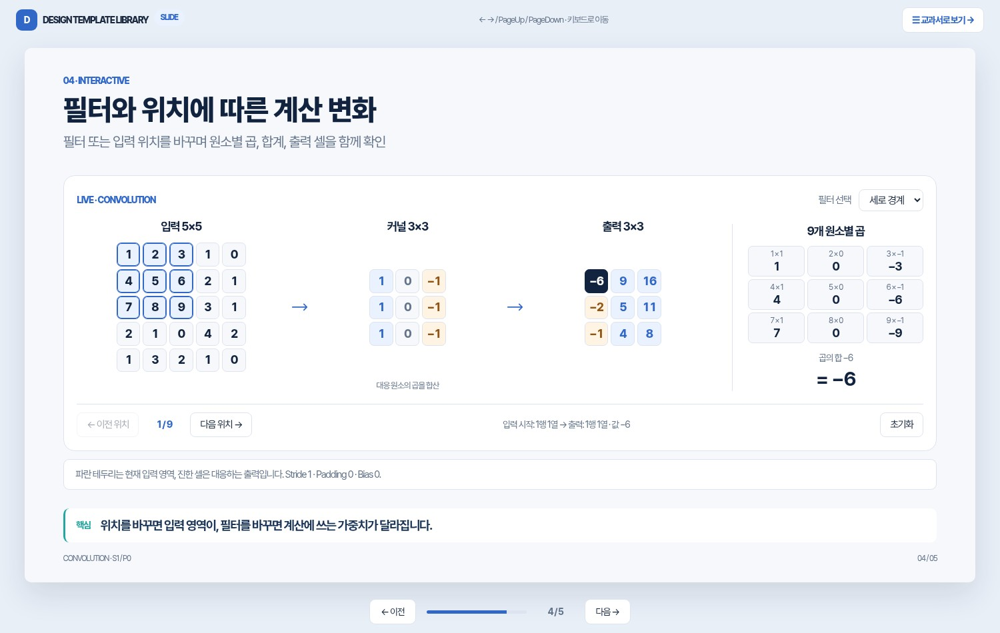

DESIGN TEMPLATE LIBRARY · V0.1
기술 슬라이드 템플릿
공통 색상·타이포그래피를 적용한 편집 가능한 HTML + PPTX 레퍼런스입니다.


04 / INTERACTIVE WEB & SLIDES
웹 교과서와 발표 슬라이드
같은 콘텐츠와 계산을 스크롤 문서와 16:9 발표자료에서 확인합니다.

DUAL-MODE LEARNING
Convolution 계산 실습
픽셀, 필터 이동, 계산, Feature Map 비교까지 5장으로 구성했습니다.